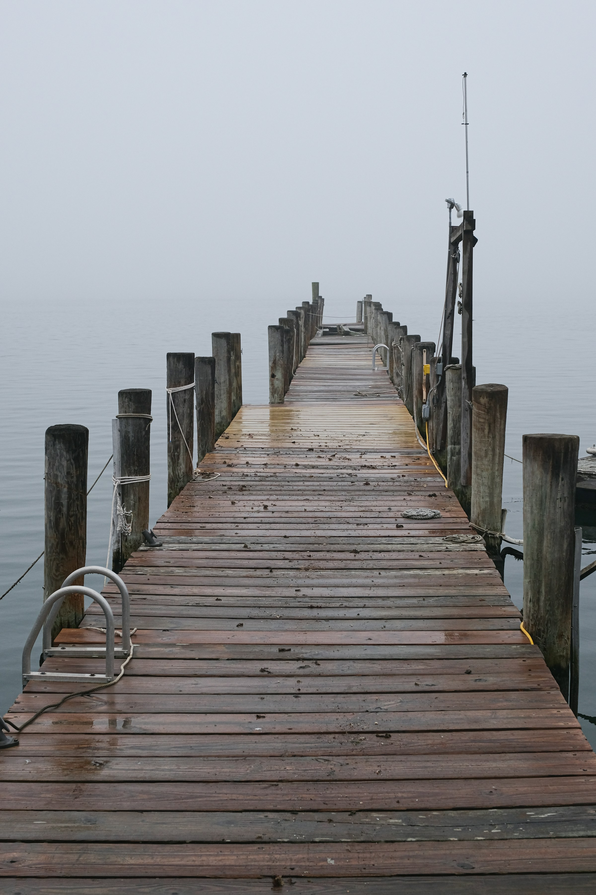
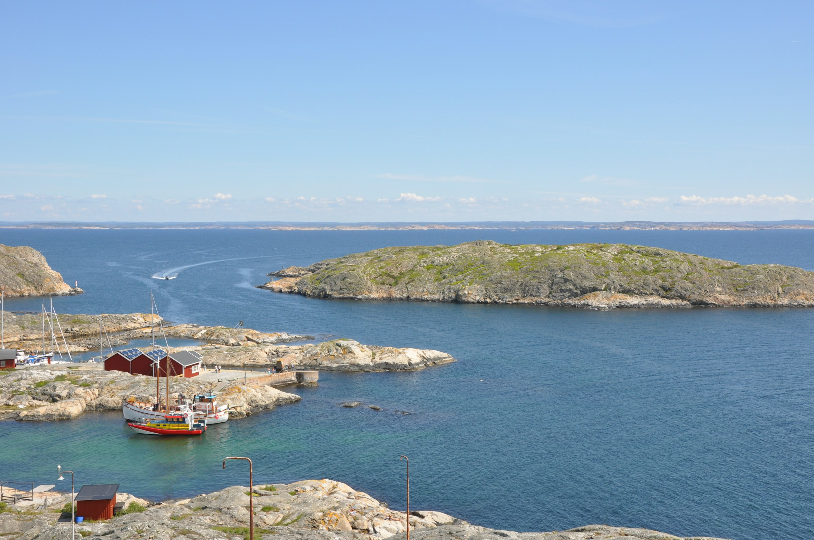
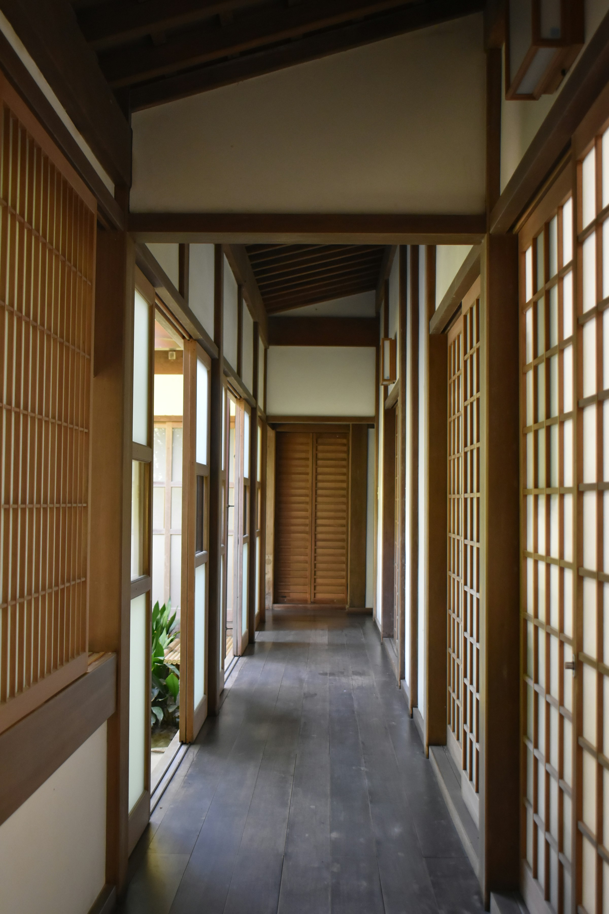
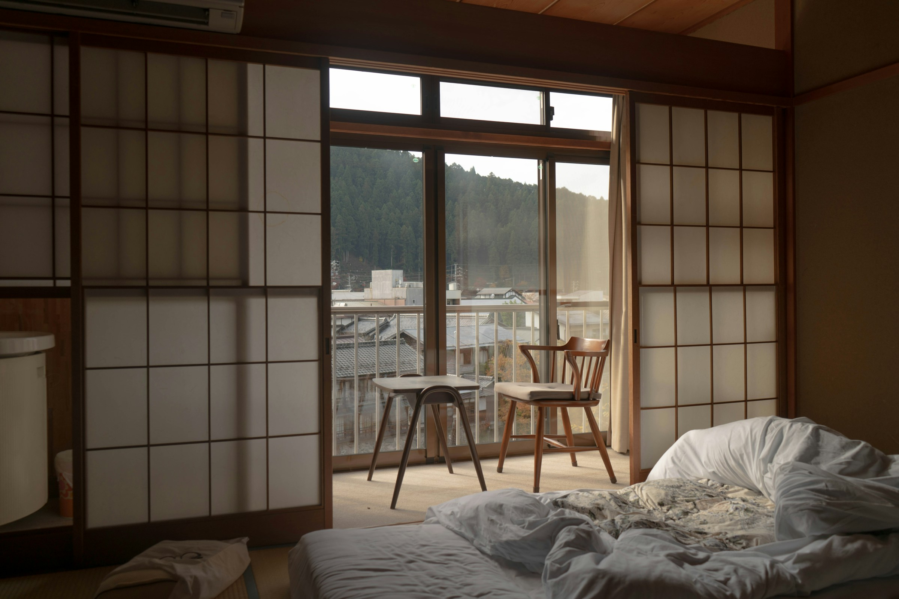

漣について
About Sazanami
ひと漣の、贅沢。Luxury, in a single ripple.
漣は、瀬戸内のちいさな島に建つ、22室の宿です。Sazanami is a 22-room residence on a small island in the Seto Inland Sea.
風が止み、水面が鏡になった瞬間に、いちばん小さな波が、ひとつだけ立ちます。それを、漣と呼びます。When the wind dies and the water becomes a mirror, the smallest wave rises — only one. We call it sazanami.
わたしたちが大切にしたいのは、その小ささ、そのかすかさ。最も繊細なものを、もっとも丁寧に扱う。それが、わたしたちの仕事です。What we hold dear is its smallness, its faintness. To handle the most delicate things with the greatest care — that is our work.

A small island, a great calm.小さな島の、大きな静けさ。
凪島 -nagishima-
本州の日生港から、専用船で30分。島の半分は、漣の私有地です。住人はスタッフだけ。A 30-minute private boat from Hinase Port. Half the island belongs to Sazanami; the only residents are our staff.
かつて棚田が広がっていた斜面は、いま山桜と橙が混じる雑木の島に戻っています。四方の海はそれぞれ別の表情を見せ、朝は東に陽が、夕は西に夕陽が落ちます。The slopes once carved into terraced rice fields have returned to wild woodland — mountain cherry and orange now grow side by side. The sea wears a different face on each side: dawn breaks in the east, dusk falls in the west.

Architecture of stillness.静けさの、建築。
建築のことOn the architecture
島の地形に沿って、棟を低く、長く。屋根は黒い瓦、壁は土と漆喰、床は栗の無垢。Buildings follow the island terrain — low and long. Black tile roofs, walls of earth and plaster, floors of solid chestnut.
外と内のあいだに、必ず縁側を置きました。風と光を、居場所のひとつにするためです。Between outside and inside, we always placed an engawa veranda — so that wind and light, too, may have a place to rest.

Quietude is our service.もてなしは、静けさそのもの。
もてなしのことOn hospitality
わたしたちは、声を低くします。廊下を歩く音を、波音より小さくします。We lower our voices. We make the sound of footsteps in the hall quieter than the waves.
食事の合間に、ふと窓の外を見たくなる――そのときに、ちょうど、夕陽が差すように。At a pause between courses, you may glance out the window — and the evening light arrives, just then.
気配を消し、しかし必ず、そこに在る。漣のもてなしは、ひと漣ほどです。Unobtrusive, yet always present. Our hospitality is as small as a single ripple.
朝の凪と夕の凪のあいだ、水面に、ひとつの漣が立つ。Between the morning calm and the evening calm, a single ripple rises on the water.
それより小さな贅沢を、私たちは知らない。We know no luxury smaller than this.
漣は、瀬戸内の小さな島に建つ、静寂のための宿です。Sazanami is a residence for stillness, on a small island of the Seto Inland Sea.